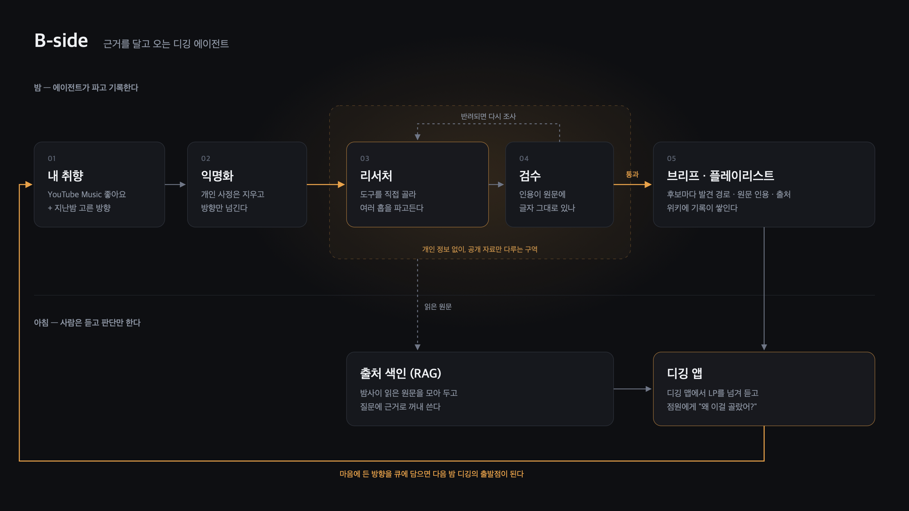

B-side, beside you
좋아하는 음악 바로 옆에
자는 동안 옆에서 같이 파 둘게요. 인터뷰랑 리뷰, 크레딧을 뒤져서 찾은 음악마다 어디서 찾았는지도 적어 둘게요. 아침엔 듣기만 하세요.
작동 방식
디깅에서 정말 귀찮은 건 여러 탭을 열어 자료를 모으는 일과, 어디서 찾았는지 기록하는 일입니다. B-side는 이 두 가지를 밤사이 대신합니다.
YouTube Music 좋아요와 지난밤 고른 방향에서 시드를 고릅니다.
개인 사정은 지우고, 어떤 방향으로 팔지만 넘깁니다.
MusicBrainz, 웹, 평론 데이터를 직접 골라 여러 홉을 따라갑니다.
인용이 출처 원문에 글자 그대로 있는지 다시 가져와 대조합니다.
YouTube Music에 오늘의 디깅이 담겨 있습니다.
LP를 넘겨 보며 어디서 이어졌는지, 무슨 근거인지 확인합니다.
"왜 이걸 골랐어?" 하면 밤사이 읽은 원문을 인용해 답합니다.
마음에 든 방향을 담으면 다음 밤 디깅의 출발점이 됩니다.
원칙
01
인용은 출처를 캐시 없이 다시 가져와 글자 단위로 대조합니다. 맞지 않으면 리서처에게 돌려보냅니다.
02
같은 모델이 이유까지 만들면 추천을 먼저 정하고 이유를 지어냅니다. 검수는 리서처의 설명이 아니라 원문만 봅니다.
03
개인 정보를 다루는 역할은 로컬 모델이 맡고, 외부 API에는 익명화된 방향과 공개 자료만 보냅니다.

실제 브리프 한 장
"Along with producer Wilma Archer (My Method Actor marks the first time Yanya has worked with just one collaborator across an album), Yanya has created a collection of songs that both grasp at the opacity of what is to come and revel in the freedom of letting go."
결과
2026-10-12 ~ 10-20 기준. 글자가 다른 인용 2건은 검수에서 걸러져 브리프에 실리지 않았습니다.